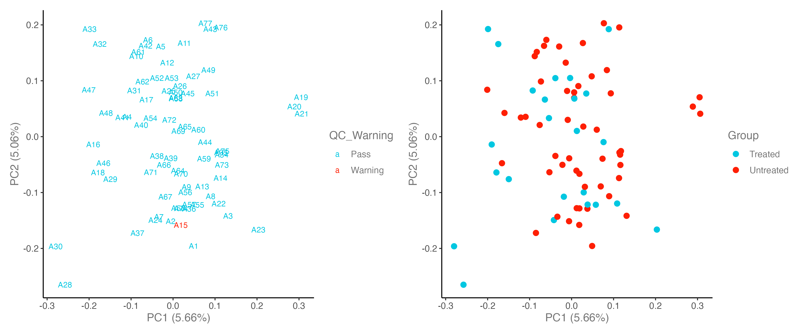
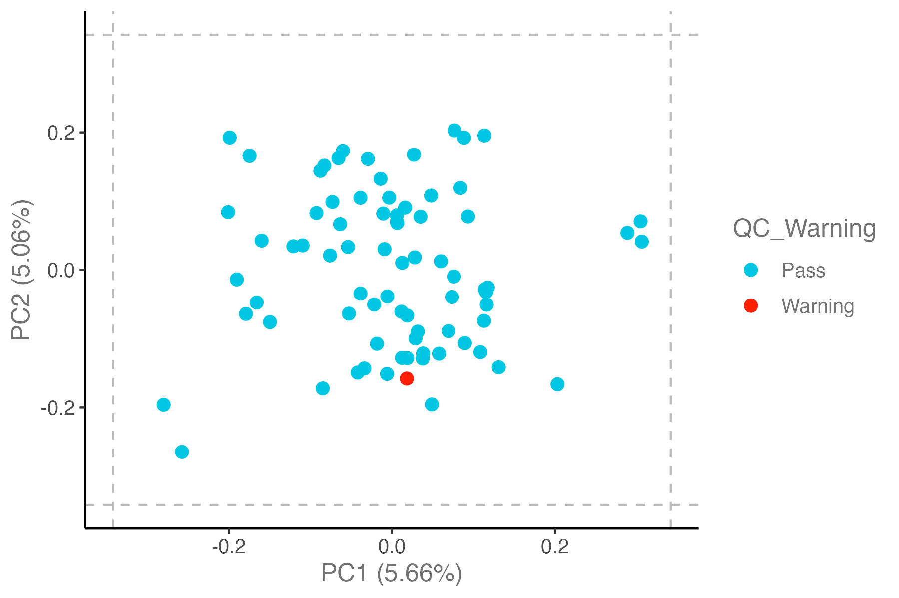
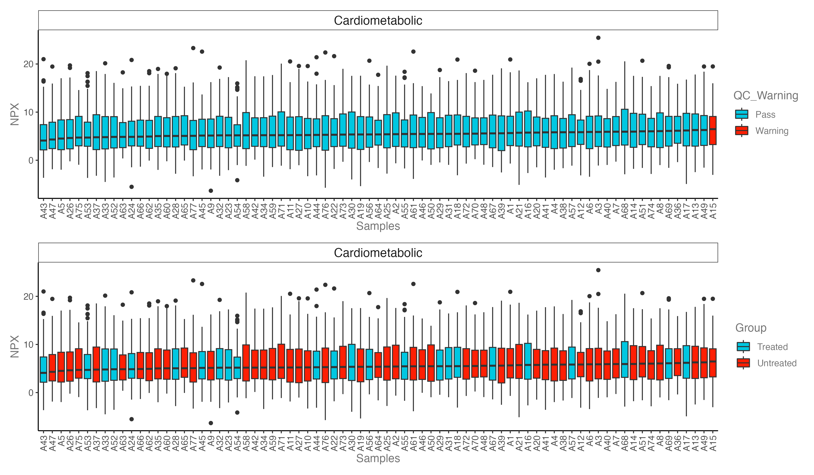
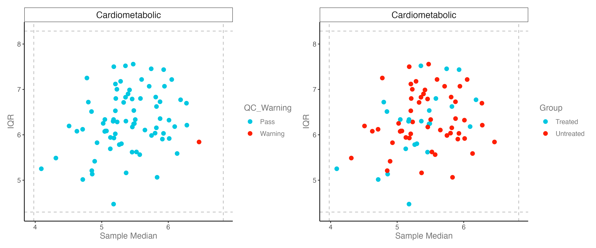

Chapter 6 PRO-Analysis
6.1 QC
- If a sample is an outlier in the PCA, NPX distribution, and QC plots, that this might indicate a true outlier.
library(OlinkAnalyze)
library(tidyverse)
library(openxlsx)
library(patchwork)
dir.create("./results/PRO",recursive = T)
#----------------------------------------------------------------------------------
# Step 1: Load clean Olink data
#----------------------------------------------------------------------------------
dat_clean <- readRDS("./data/20231123_olink_long.rds") %>% as_tibble()
# SampleID Index OlinkID UniProt Assay MissingFreq Panel_Version PlateID QC_Warning LOD NPX
# <chr> <int> <chr> <chr> <chr> <dbl> <chr> <chr> <chr> <dbl> <dbl>
# 1 A1 1 OID012… O00533 CHL1 0.0188 v.1201 Exampl… Pass 2.37 13.0
# 2 A2 2 OID012… O00533 CHL1 0.0188 v.1201 Exampl… Pass 2.37 11.3
# 3 A3 3 OID012… O00533 CHL1 0.0188 v.1201 Exampl… Pass 2.37 25.5
# 4 A4 4 OID012… O00533 CHL1 0.0188 v.1201 Exampl… Pass 2.37 14.5
# 5 A5 5 OID012… O00533 CHL1 0.0188 v.1201 Exampl… Pass 2.37 7.63
# 6 A6 6 OID012… O00533 CHL1 0.0188 v.1201 Exampl… Pass 2.37 6.32
#----------------------------------------------------------------------------------
# Step 2: PCA plot: check QC_Warning samples & Group
#----------------------------------------------------------------------------------
p1 <- dat_clean %>% olink_pca_plot(label_samples = T, quiet = T)
p2 <- dat_clean %>% olink_pca_plot(color_g = "Group", quiet = T)
p <- p1[[1]] + p2[[1]]
ggsave("./results/PRO/1.PCA_QC.png", p, width = 12, height = 5)
## PCA plot: 3 SD from the mean of the plotted PC
# Samples more than +/-outlierDef[3,3] standard deviations from the mean of the plotted PC will be labelled.
p <- dat_clean %>% olink_pca_plot(outlierDefX = 3, outlierDefY = 3, outlierLines = T, label_outliers = T, quiet = T)
ggsave("./results/PRO/1.PCA_QC_outlierDef_3sd.png", p[[1]], width = 6, height = 4)
#----------------------------------------------------------------------------------
# Step 3: Boxplot: NPX distribution plot
#----------------------------------------------------------------------------------
p1 <- dat_clean %>% olink_dist_plot() +
theme(axis.text.x = element_text(angle = 90, hjust = 1, vjust = 0.5))
p2 <- dat_clean %>% olink_dist_plot(color_g = "Group") +
theme(axis.text.x = element_text(angle = 90, hjust = 1, vjust = 0.5))
p <- p1 + p2 + plot_layout(ncol = 1)
ggsave("./results/PRO/2.Box_distribution.png", p, width = 12, height = 7)
#----------------------------------------------------------------------------------
# Step 4: QC plot: IQR_median
#----------------------------------------------------------------------------------
# IQR: interquartile range, 四分位距
# dashed lines: +/-3 standard deviations
p1 <- dat_clean %>% olink_qc_plot()
p2 <- dat_clean %>% olink_qc_plot(color_g = "Group")
p <- p1 + p2
ggsave("./results/PRO/3.IQR_qc.png", p, width = 12, height = 5)
-注：是否应排除这些异常值取决于潜在异常值与其他样本的不同程度，以及异常值是否可以追溯到生物学、样本特定或技术问题。综合上述几个分析，本测试数据的QC_Warning样本予以保留。
6.2 Differential Protein Expression Analysis
library(rstatix)
#----------------------------------------------------------------------------------
# Step 1: Basic statistical analysis on clinical data: Age & Gender
#----------------------------------------------------------------------------------
dat_clean %>% dplyr::select(Group, Gender) %>% table() %>% chisq_test() ## 性别在分组之间有显著差异，需要进行矫正
# n statistic p df method p.signif
# * <int> <dbl> <dbl> <int> <chr> <chr>
# 1 7084 261. 1.24e-58 1 Chi-square test ****
dat_clean %>% t_test( Age ~ Group , detailed = T)
# estimate estimate1 estimate2 .y. group1 group2 n1 n2 statistic p df conf.low conf.high
# * <dbl> <dbl> <dbl> <chr> <chr> <chr> <int> <int> <dbl> <dbl> <dbl> <dbl> <dbl>
# 1 0.227 79.2 79.0 Age Treated Untre… 2208 4876 0.692 0.489 4007. -0.416 0.871
#----------------------------------------------------------------------------------
# Step 2: T test, no adjustment
#----------------------------------------------------------------------------------
# perform t-test
dat_clean <- dat_clean %>% mutate(Group = factor(Group,levels=c("Treated","Untreated")))
ttest_results <- olink_ttest(df = dat_clean, variable = "Group")
# cutoff: adj.P.Val < 0.05 && |FC| > 1.5
ttest_results <- ttest_results %>%
dplyr::rename("log2FC" = "estimate") %>%
mutate(Group = case_when( Adjusted_pval<0.05&log2FC>0.58 ~ "up",
Adjusted_pval<0.05&log2FC< -0.58 ~ "down",
.default = "not sig"))
# output
write.xlsx(ttest_results, file = "./results/PRO/4.deps_ttest_results.xlsx")
table(ttest_results$Group)- Olink deps results (no adjustment): 4.deps_ttest_results.xlsx
#----------------------------------------------------------------------------------
# Step 3: limma, adjusted by Gender
#----------------------------------------------------------------------------------
library(limma)
# data: wide format
exp <- readRDS("./data/20231123_olink_wide.rds")
meta <- readRDS("./data/20231123_olink_meta.rds")
identical(rownames(meta),colnames(exp))
# limma
meta$contrast <- as.factor(meta$Group)
design <- model.matrix(~ 0 + contrast + Gender , data = meta)
fit <- lmFit(exp, design)
contrast <- makeContrasts( limma_adjAge = contrastTreated - contrastUntreated ,
levels = design)
fits <- contrasts.fit(fit, contrast)
ebFit <- eBayes(fits)
# result
# KO_WT
res <- topTable(ebFit, coef = "limma_adjAge", adjust.method = 'fdr', number = Inf)
limma.res <- res %>% filter(!is.na(adj.P.Val)) %>%
mutate( logP = -log10(P.Value) ) %>%
mutate( contrast = "Treated_Untreated") %>%
mutate( logFDR = -log10(adj.P.Val) ) %>%
mutate( GeneSymbol = rownames(res)) %>%
dplyr::select(GeneSymbol,everything()) %>%
as_tibble()
## cutoff: adj.P.Val < 0.05 && |FC| > 1.5
limma.res <- limma.res %>% mutate(group = case_when( adj.P.Val<0.05&logFC>0.58 ~ "up",
adj.P.Val<0.05&logFC< -0.58 ~ "down",
.default = "not sig"))
limma.res %>% count(group)
## output
write.xlsx( limma.res, "./results/PRO/5.deps_limma_adjAge_results.xlsx", overwrite = T, rowNames = F) 其他分析及可视化部分可参考RNA-seq分析